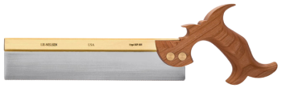
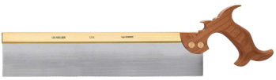
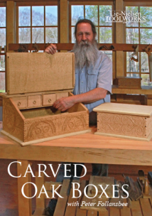
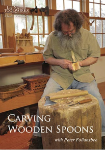
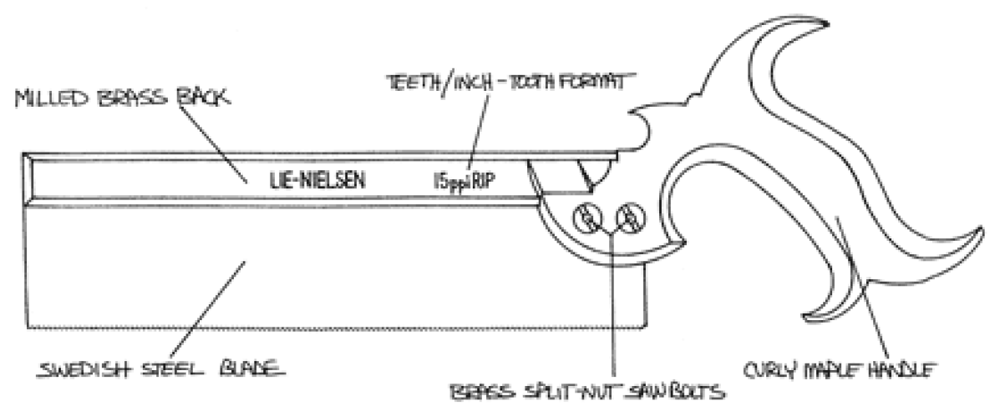
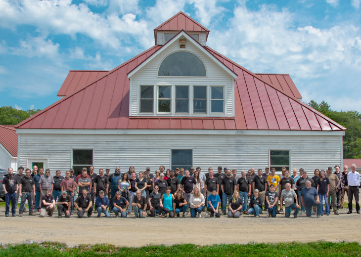

Our Saws are exceptionally accurate, beautiful, and perfectly set for the jobs for which they are designed. Saw blades are made from polished Swedish Steel and tempered to Rockwell 52 for durability and ease of sharpening. We take care to make sure our saw blades are properly sharpened and accurately set. We carefully hand shape and finish each handle for a comfortable, silky-smooth grip. Each Lie-Nielsen Saw is precision filed, set, and test cut in hardwood before it leaves our shop.
SAWS
Dovetail

Reviews
$175
Styles:
Quantity:
Since dovetailing is a ripping operation, where the kerf is running with the grain, our Dovetail Saw has its teeth filed to a rip profile. Solid milled Brass back, finest quality Swedish Steel blade, Cherry handle and traditional Brass split nut saw bolts. This Saw strikes an ideal balance between surface finish and speed.
Carcass

Reviews
$175
Styles:
Quantity:
The Carcass Saw is used for precise cuts across the grain, cutting tenon shoulders, and defining the edges of a dado. An ideal complement to the Dovetail Saw. It has 14 points per inch, filed crosscut, for cutting quickly, yet accurately and smoothly.
Tenon
Reviews
$250
Styles:
Quantity:
A Tenon Saw is a large backsaw used for making deep, accurate cuts in furniture joinery. It should make straight, fast cuts without binding. Based on a classic Henry Disston model from the early 20th century, these saws are solid, well balanced and smooth cutting. Filed rip for cutting tenons, which is with the grain.
EDUCATION
Instructor:

Carved Oak Boxes
$40

Carving Wooden Spoons
$40
PROJECTS
View completed projects by satisfied Lie-Nielson customers! Want to share your projects with the Lie-Nielson community? Upload your own pieces to
Learn what sets Lie-Nielson hand-crafted saws apart from other products. Hover over a component to learn what each of our saws are composed of.

Who Are We

Our Mission is to design and create beautiful, heirloom quality, hand tools that inspire woodworkers and other artisans. Through exceptional support and education, our customers receive the same personal attention we put into our tools.LIE-NIELSEN TOOLWORKS began in 1981 as an effort to make top-quality hand tools available again from a U.S. maker and to revive discontinued, but useful, designs so the average woodworker could obtain them.Today we make a variety of planes, saws, spokeshaves, chisels, and more. We have improved and refined designs, and use better materials like Ductile Iron and Manganese Bronze for castings and cryogenically treated A2 Tool Steel for the blades. Our plane blades are much thicker than those of any other production planes. The quality of machining and finishing results in a tool that looks as great as it works, and will be a pleasure to use for years to come.
SIGN UP
Enter your email to receive updates on restocks, new products, and more!